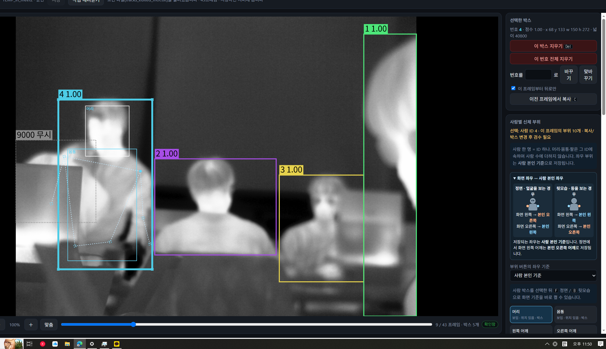
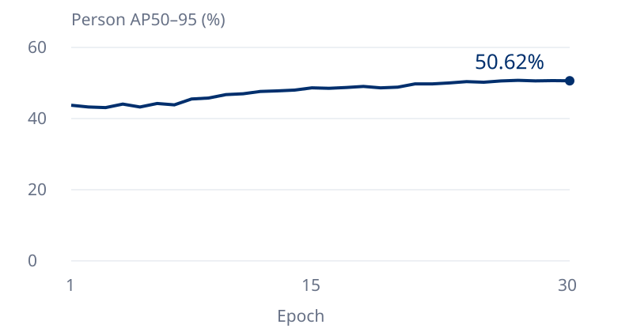

윤오름팀장
시스템 설계 · 통신
GUI · 짐벌 제어
윤오름 · 김재남 · 윤관 · 정하건 · 홍정호
실제 장치 사진 삽입 예정
시스템 설계 · 통신
GUI · 짐벌 제어

Runtime 구현
멀티스레드 파이프라인

적외선 모델 학습
경량화 · 최신 모델 조사

추적 알고리즘
성능 검증 · 개선
Runtime 최적화
NPU · 추론 가속
LWIR: 장파적외선 열영상 · DEEPX NPU: 보드에서 검출 모델을 실행하는 가속기
열영상 수신
보드에서 영상 처리
PC에서 대상 선택
카메라 방향 제어
30Hz 목표 · 입력 주기 약 33.3ms
거리 범위 안에서 사람 찾기
가림 뒤에도 선택 ID 이어가기
2축 추종 · PC 상태 확인 · 정지
카메라 입력 · 프레임 준비
NPU 검출 · ID 연결
선택 위치 · 짐벌 명령

검출 누락 →
추적 입력도 사라짐


이 비교에서 m의
검출 성능이 높음
m은 검출 성능이 높은 대신
호출시간이 더 필요
검증 결과 확인
장치 실행용 모델
시간 · 검출 결과 재확인
실제 관측의 방향 비교
놓치기 전 관측 활용
놓친 구간의 상태 갱신
같은 검출 결과에서
ID 변경 감소
ID 변경뿐 아니라
신원 연결 품질도 확인
다음 프레임 준비
요청 제출·완료
추적·영상 전달
재생 부하 조건에서
결과 지연 감소
표적 위치를
제어 입력으로
현재 위치 오차
오차의 변화
선택 ID 위치로 추종
방향 입력으로 조작
입력 상실·오래된 관측 확인
운용 앱 캡처 삽입 예정
영상 속 사람을 선택
선택 ID · 상실 상태
수동 입력 · 정지
선택 ID · 모드 · 수동 입력
영상 · 검출 · 추적 상태
선택 위치 → 구동 명령
사람과 ID 확인
Pan·Tilt 반응
ID와 상실 상태
운용자 개입
assets/rooftop-demo.mp4
모델 · 해상도 · 장소
사람 크기 · 누락·오검출
정한 기준으로 결과 기록
선택 ID의 연속성
상실·재포착 확인
같은 ID의 위치→짐벌
들어오는 속도를 처리하는가
NPU · 서버 · 화면 · 장치 구분
열화상에 맞춘 검출
같은 사람의 ID 유지
GUI 선택을 2축 제어로